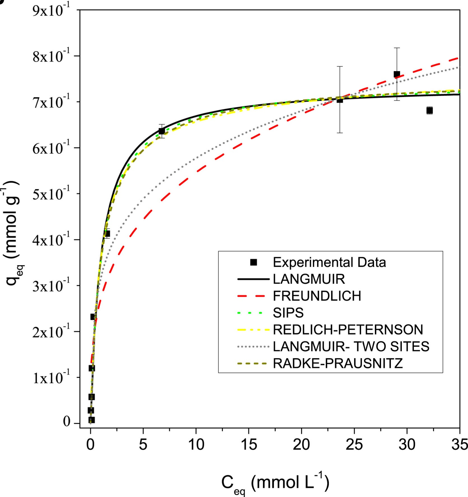

Adsorption of Radionuclides
Project Summary: This project focused on the removal of uranium, cesium, radium, and americium from aqueous systems using different adsorbent materials, including bone meal, hydroxyapatite, chitosan-zeolite, macrophites, and standard biochars. The studies involved the evaluation of isotherms, kinetics, point of zero charge, and effects of process variables.
Key Contributions:
- Investigated sorption behavior of radionuclides in batch experiments
- Evaluated standard and engineered adsorbents (natural and synthetic)
- Applied experimental design to study key operational parameters
- Characterized materials via SEM, BET, FTIR, and pHpzc
Techniques Used: Adsorption isotherms (Langmuir/Freundlich), kinetics (pseudo-1st/2nd-order), surface area analysis, pHpzc determination, gamma spectrometry, SEM/EDS.
Publications:
- An adsorption agent based on chitosan–zeolite composite: environmental and radioactive liquid waste remediation
- Biosorption of uranium from aqueous solutions by Azolla sp. and Limnobium laevigatum
- Use of calcium alginate beads and Saccharomyces cerevisiae for biosorption of 241Am
- The use of rice and coffee husks for biosorption of U (total), 241Am, and 137Cs in radioactive liquid organic waste
- Uranium biosorption by Lemna sp. and Pistia stratiotes

Figure 1: Pareto chart and contour plot from experimental design for chitosan–zeolite composite

Figure 2: Adsorption models applied to Lemna sp.

Figure 3: SEM image of Lemna sp. surface morphology used for uranium biosorption
Image Credits:
- Figure 1: Adapted from An adsorption agent based on chitosan–zeolite composite: environmental and radioactive liquid waste remediation, Environmental Science: Advances (2022).
- Figure 2: Adapted from Uranium biosorption by Lemna sp. and Pistia stratiotes, Journal of Environmental Radioactivity (2019).
- Figure 3: Adapted from Uranium biosorption by Lemna sp. and Pistia stratiotes, Journal of Environmental Radioactivity (2019).